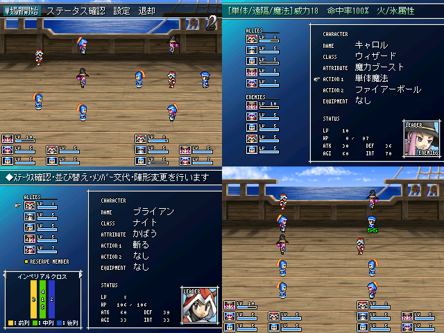

その残りの長い時間をたっぷりと製作に費やしましたが、
体験版という形になってしまいそうです。ごめんなさい。
ちなみに内容は、
（ロマサガ＋オウガバトル＋ポケモン）÷３のようなゲームです。
パスワード制の通信機能も入れようかと考えているところ。
|
| |
 | |
| 【作者名】 | 綺羅星のティアラ |
| 【作者コメント】 | 去年のNo.122です。あれから、構想11か月と2週間、 その残りの長い時間をたっぷりと製作に費やしましたが、 体験版という形になってしまいそうです。ごめんなさい。 ちなみに内容は、 （ロマサガ＋オウガバトル＋ポケモン）÷３のようなゲームです。 パスワード制の通信機能も入れようかと考えているところ。 |
| 【管理人コメント】 | 2003で通信機能？ 2000しかもってない私には何のことやら。 |
|
| |